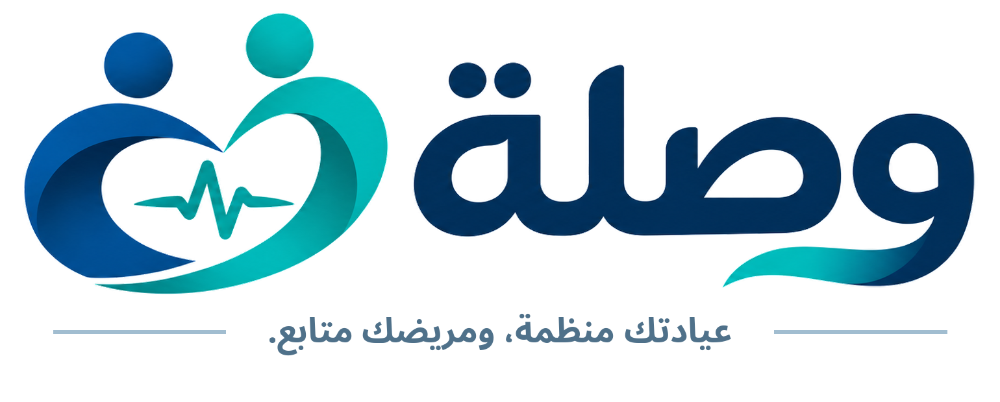
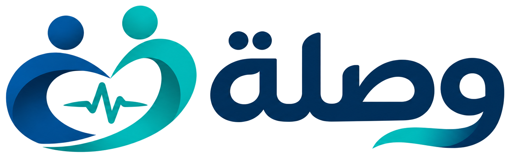
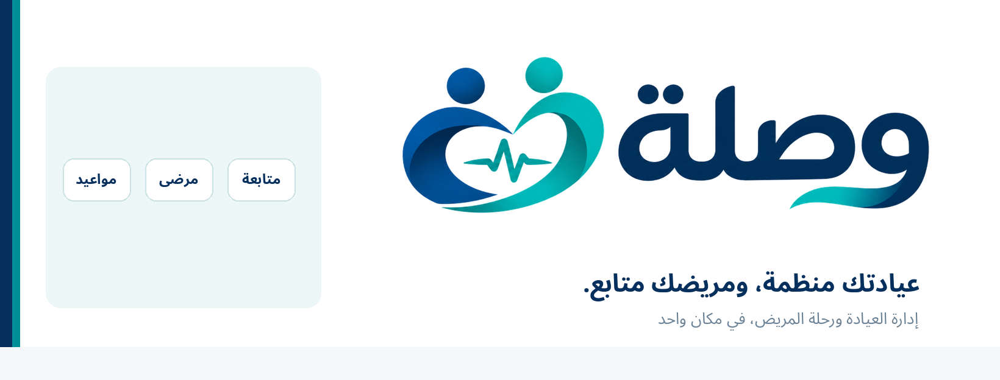
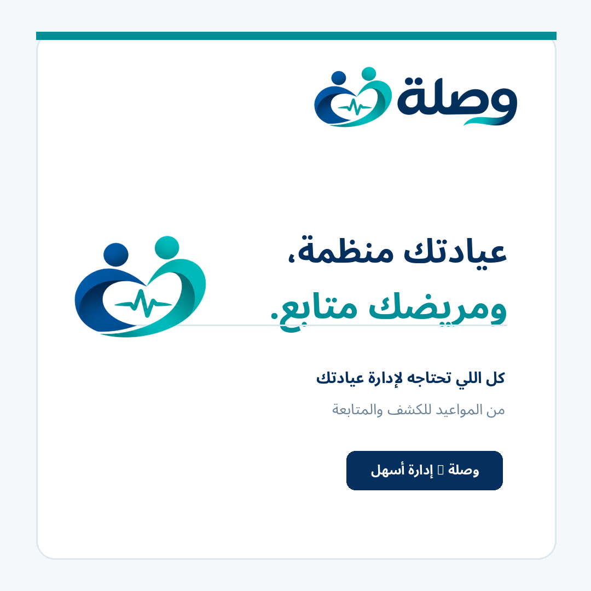
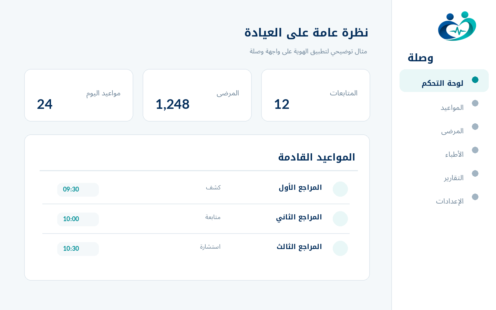

هوية وصلة: منصة إدارة العيادات ورحلة المريض، بالرسالة الجديدة المعتمدة
الشعار يجمع شخصيتين وتكوينًا يُشبه القلب وخط نبض. الرسالة الجديدة تربط التنظيم اليومي للعيادة بمتابعة رحلة المريض: «عيادتك منظمة، ومريضك متابع.»
الكحلي والكتابة الواضحة يمنحان الهوية حضورًا موثوقًا ومهنيًا.
التكوين الإنساني والتركواز يقدّمان إحساسًا قريبًا من عالم الصحة.
العلامة تربط الإنسان بخدمة صحية رقمية، وليست مجرد شعار لمركز طبي.
الشعار الكامل مع الجملة التعريفية

نسخة مختصرة للاستخدام الرقمي
الرمز المستقل للأيقونات والصور الشخصية
ملاحظة إنتاجية: مصدر الشعار الحالي PNG Raster، وجميع النسخ هنا مشتقة منه وليست إعادة رسم Vector.
ألوان واجهة الاستخدام المقترحة مستوحاة من الشعار المعتمد. الملف الأصلي يحتوي تدرّجات داخل الرسم؛ لذا الأكواد التالية مرجع لتصميمات الويب والسوشيال، وليست استخراجًا لونيًا مطابقًا لكل بكسل.
في الواجهات، استخدم الكحلي للعناوين والنصوص المهمة، والتركواز للعناصر التفاعلية بشرط اختبار تباين النص والأزرار.
نُبقي كلمة «وصلة» المرسومة في الشعار كما هي. أما الكتابات داخل النظام والموقع والمحتوى التسويقي فتستخدم خطًا عربيًا واضحًا وسهل القراءة.
نستخدم جملة قصيرة تحكي النتيجة التي يبحث عنها طبيب العيادة، ونفصلها عن وصف المنتج الأطول.
تعبير تسويقي عن الوعد الأساسي: تشغيل العيادة بشكل أوضح مع دعم المتابعة الطبية.
عيادتك منظمة، ومريضك متابع.
منصة تساعد الطبيب وفريقه في إدارة العيادة، وتنظيم المواعيد والزيارات، وتوثيق ومتابعة رحلة المريض وفق الصلاحيات المتاحة.
نستخدم اللوجو الأصلي مع مساحات بيضاء واسعة ورسائل مختصرة. لا نعتمد على رسومات طبية مزدحمة أو زخارف غير مرتبطة بالمنتج.

• عنوان واحد واضح في كل تصميم
• التركواز يستخدم للتأكيد وليس لكل العناصر
• أسلوب بسيط يشرح الفائدة للعيادة والمريض
• تأكد من ظهور النصوص في قصّات فيسبوك على الموبايل

هدفنا توحيد شخصية وصلة داخل الـDashboard بدون التضحية بالوضوح. ده نموذج بصري للهوية، وليس لقطة من النظام الحقيقي.

Hierarchy سهل للقراءة في العربي
رموز وألوان بنفس القواعد
تصميم مناسب للاستخدام اليومي الطويل